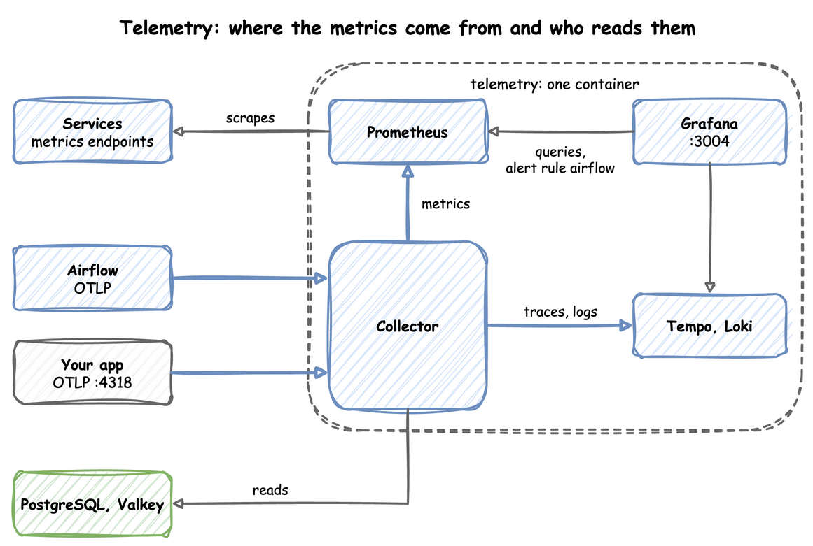
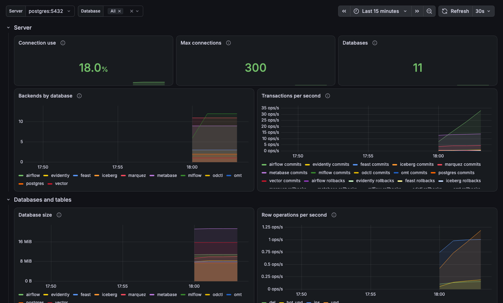
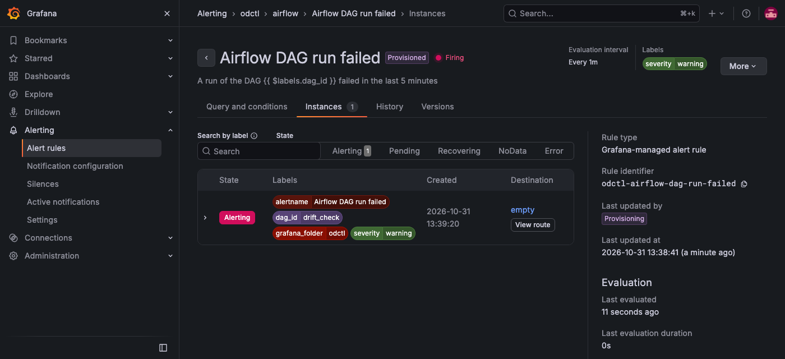

Telemetry
The telemetry profile runs the grafana/otel-lgtm image: an OpenTelemetry Collector, Prometheus, Tempo, Loki and Grafana in one container. OpenTelemetry is an open standard for metrics, traces and logs, and OTLP is its protocol for sending them. Tempo stores traces, Loki stores logs, and Grafana draws dashboards from all three stores.
This guide builds on Getting Started. Start the profile next to the profiles you want to watch:
| docs/snippets/telemetry/commands.sh:up | |
|---|---|
Prometheus reads metrics from the services, the collector receives OTLP and passes each kind of data to its store, and Grafana reads the stores and evaluates its alert rule against Prometheus:

| Endpoint | Address |
|---|---|
Grafana (user user, password password) |
http://127.0.0.1:3004 |
| Prometheus | http://127.0.0.1:19090 |
| OTLP through the collector | 127.0.0.1:4317 (gRPC), http://127.0.0.1:4318 (HTTP) |
Where the Metrics Come From
Prometheus scrapes the services that publish a metrics endpoint, by container name on the odctl network. Airflow pushes its metrics over OTLP to the collector, and the collector reads PostgreSQL and Valkey directly. A service that is not running is a target that is down.
Dashboards
Grafana has a dashboard per service in a folder named odctl. A dashboard fills in once its service's profile is up. The dashboards are JSON files in .odctl/grafana/dashboards/. Edit a file and run odctl restart telemetry to load it. Changes made in the Grafana UI are not kept.
For example, the PostgreSQL dashboard:

Send Your Own Metrics
Point an OpenTelemetry SDK at http://127.0.0.1:4318, its default HTTP port. The end-to-end tests post one metric with curl, which shows the path:
The collector answers {"partialSuccess":{}}. The collector passes metrics on in batches, so the query can come back empty for a few seconds. Then its result holds demo_total with the value "42". Prometheus also accepts OTLP metrics directly at http://127.0.0.1:19090/api/v1/otlp/v1/metrics.
Add an Alert Rule
An alert rule is a query that Grafana runs against Prometheus every minute, and a limit it compares the result with. The rule fires when the result passes the limit. Grafana then shows one alert for each DAG, or other label set, that the query returns. odctl ships one rule, which fires when an Airflow DAG run fails. This section builds on Airflow DAGs from S3, which explains how to upload and run a DAG, and on Evidently Reports, which explains drift.
The shipped rule is airflow.yaml in .odctl/grafana/alerting/. Grafana loads every file in that folder when it starts, so restart telemetry after you add or edit a file. Grafana marks these rules Provisioned and does not let you edit them in its UI. This lists the rules that Grafana loaded:
| docs/snippets/telemetry/commands.sh:alert-rules | |
|---|---|
The rule counts the DAG runs that failed in the last 5 minutes for each DAG, from the metric airflow_dagrun_duration_failed_milliseconds that Airflow sends, and fires for each DAG with at least one. These 5 minutes are the rule's window. The window, the evaluation every minute and the labels are set in the file and can change. The rule has no waiting period, so it fires on the first evaluation that sees a failure.
When telemetry starts while Airflow is already running, Prometheus has no earlier sample of each series, so the rule also fires, for one window, for each DAG that has failed since Airflow started. A restart keeps Prometheus's samples, so it does not do this.
To see it fire, run a DAG that fails. This DAG checks for data drift: it compares a column of current data with a reference dataset and fails when the column has drifted.
It measures the change with Evidently's ValueDrift metric and the method wasserstein, the distance between the two distributions in units of the reference's standard deviation. The DAG fails when the distance is above DRIFT_THRESHOLD. The DAG names its method and its threshold because Evidently picks a different test by default for a reference of 1,000 rows or fewer, and a different test gives a score on a different scale.
The parameter shift moves the mean of the current data away from the reference's, in standard deviations, so the default run drifts and a run with shift 0 does not. Save it as drift_check.py:
The DAG needs Evidently in the Airflow container. odctl installs the packages in _AIRFLOW_PIP_DEPS when Airflow starts, as Evidently Reports explains, so set the key and start Airflow. Run this in the folder that holds your .odctl workspace:
| docs/snippets/telemetry/commands.sh:drift-env | |
|---|---|
The command prints nothing and leaves the old file as .odctl/.env.bak.
| docs/snippets/telemetry/commands.sh:drift-up | |
|---|---|
The command prints each container it starts and ends with All requested profiles successfully started!. If Airflow is already running, run odctl recreate airflow instead, because a restart does not read .env again, as Apply a Change explains. Copy the DAG into the Airflow container and upload it to s3://airflow/dags, as Airflow DAGs from S3 does:
| docs/snippets/telemetry/commands.sh:drift-upload | |
|---|---|
The upload prints nothing. Airflow reads the bucket every 15 seconds, so wait until the first command lists the DAG. Then unpause it and trigger a run named drifted:
| docs/snippets/telemetry/commands.sh:drift-run | |
|---|---|
The last command prints the new run in state queued. The task fails after a few seconds, so list the runs with docker exec airflow airflow dags list-runs drift_check until drifted has the state failed. Airflow sends its metrics to the collector every 15 seconds, set by OTEL_METRIC_EXPORT_INTERVAL in .odctl/compose-orch.yml. Grafana evaluates the rule every minute, so the alert appears within about 2 minutes. This lists the alerts that are firing:
The alert carries the label dag_id with the DAG that failed. Grafana calls the state Alerting in its API and Firing in its UI. Open http://127.0.0.1:3004/alerting/grafana/odctl-airflow-dag-run-failed/view?tab=instances and log in with user and password:

The destination is empty, Grafana's default contact point. It sends nothing, because odctl configures no contact point of its own. A contact point is where Grafana sends a notification, such as an email address or a chat channel. A firing alert therefore shows only in Grafana.
The summary under the rule's title is the template, because one rule covers every DAG. Each alert has it filled in with its DAG, which the instance's details and the alerts API show.
To be told when an alert fires, you need a contact point and a notification policy that routes alerts to it. Grafana's database lives inside the otel-lgtm container and has no volume, so odctl down deletes a contact point made in the UI. Keep them in a file instead. Grafana loads a contact point and a notification policy from a file in .odctl/grafana/alerting/ at each start, in the format of Grafana's file provisioning. Add the file and restart telemetry, as above.
Deleting a file and restarting leaves its rule, contact point or policy in Grafana. odctl down telemetry and then odctl up telemetry remove them.
To tell whoever receives the alert what to do, add a runbook_url annotation to the rule in its file.
The alert clears when the failed run falls out of the window. A run below the threshold raises none. This triggers a run named steady with shift 0 and prints the new run in state queued. The second command prints the distance of each run from its task log:
| docs/snippets/telemetry/commands.sh:drift-steady | |
|---|---|
| docs/snippets/telemetry/commands.sh:drift-score | |
|---|---|
Both runs draw their samples from fixed seeds, so the distances repeat on every run. The drifted run is above the threshold and fails, and the steady run is below it and succeeds.
A rule of your own is another file in the same folder. Copy it in and restart telemetry, as above. To write one, start from the sample below and change its uid, title, query and limit. This sample fires when the model calls of the last hour have used more tokens than a budget. odctl does not provision it, because the budget is yours: change the highlighted limit.
gen_ai.client.token.usage is the OpenTelemetry metric for the tokens that one model call used. Prometheus writes its name with _ in place of .. For a histogram with explicit buckets, as the OpenTelemetry SDKs send by default, Prometheus keeps the sum in the series that ends in _sum. The query therefore sums gen_ai_client_token_usage_sum. An SDK set to exponential histograms sends one native histogram series with no _sum, as Airflow's does, and this query then returns nothing.
The query counts each series in one of two ways:
- A series that began within the last hour counts by its last value, which is all its tokens since it began, even after the application stops sending.
- A series that is more than an hour old counts by its increase over the hour, while the application exports at least every 5 minutes, as the OpenTelemetry SDKs do by default.
increase() counts only the change after a series' first sample. Alone, it would miss the tokens in that first sample, and every token of an application that exports once. When telemetry starts while the application is already running, the first hour counts all tokens since the application started.
Save it as token_budget.yaml:
| docs/snippets/telemetry/commands.sh:add-rule | |
|---|---|
The copy prints nothing, and the restart ends with Restart complete. Grafana and the collector take a few seconds to answer after the restart. Run the listing command from the start of this section again until it prints both rules:
The budget rule has no data until an application sends the metric, and no data counts as no alert. Send Your Own Metrics shows how to send a metric to the collector.
From Another Container
Inside the odctl network, send OTLP to the collector at otel-lgtm:4317 (gRPC) or http://otel-lgtm:4318 (HTTP), as Airflow does. Prometheus is http://otel-lgtm:9090 and Grafana is http://otel-lgtm:3000.
This command sends an empty batch to the collector from a container on the network:
| docs/snippets/telemetry/commands.sh:container | |
|---|---|
Runnable Example
Save this file as example.sh and run it with bash example.sh in the folder that holds your .odctl workspace. It waits until Prometheus returns the metric:
It prints the collector's answer and then the query result, with demo_total and the value "42".